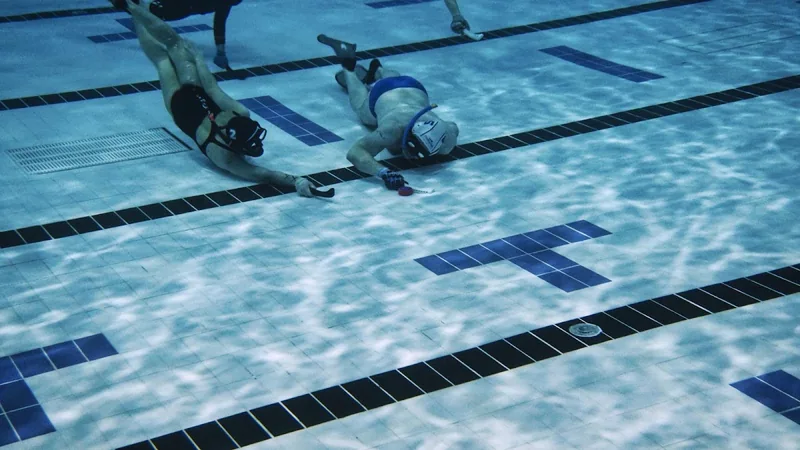
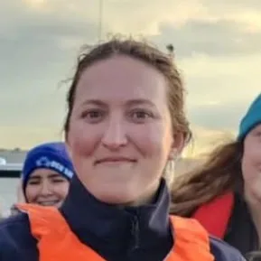
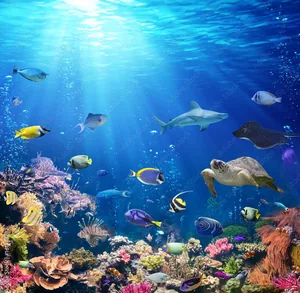
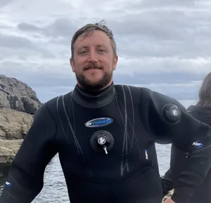
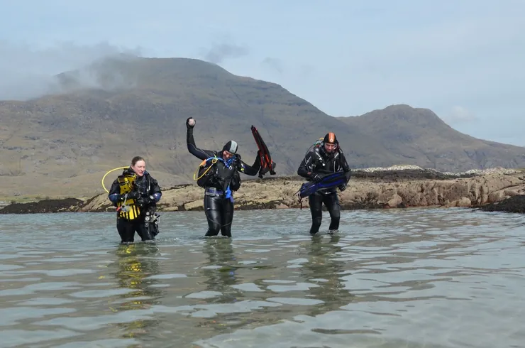

Explore the blue planet.
Learn to scuba dive, play underwater hockey and explore the Irish coast with DCU Sub-Aqua Club.
- Founded at DCU
- 2001
- Training standard
- CMAS
- Governing body
- Diving Ireland
4 mAbout the club
A club for life in the water.
We’re a student-led diving club for beginners, qualified divers and anyone curious about life below the surface.
We train in the pool and explore dive sites around Dublin and across Ireland. You can also join us for snorkelling, underwater hockey and club socials.
9 mScuba diving & snorkelling
Your first dive starts in the pool.
You can join as a complete beginner. Train with qualified Diving Ireland instructors and work towards your CMAS 1★ Trainee Diver qualification.
- Learn the theoryCover the basics of equipment, communication and dive planning.
- Build your skillsPractise snorkelling and scuba skills with instructors.
- Head into open waterProgress to supervised sea dives when you’re ready.

16 mUnderwater hockey
Hockey at the bottom of the pool.
Two teams use short sticks to move a weighted puck along the pool floor. It’s a fast, mixed-team sport and a good way to build confidence in the water.
Beginners are welcome. The club provides sticks, gloves and caps. Get in touch before your first session to check what to bring.
Ask about hockey
24 mClub calendar
What’s coming up.
Pool training, club socials and weekend dives. The calendar is kept up to date by the committee.
30 mDive map
Where we dive.
Explore the club’s map of dive sites around the Irish coast.

See it from below.
A short film from club dives.
39 m2026–27 committee
Meet the team.

Alizee Leleu
President, Diving & Training Officer
Naoise d’Art
Chairperson

Devyani Jambhule
Treasurer

Alana Guckianwalton
Vice Chairperson & Secretary

Paul Stratan
Underwater Sports & Assistant Diving Officer
Show the full committeeShow fewer 12 more

Conor Pursun
Snorkel & Equipment Officer

Nat Kolesnyk
Boat Officer

Konrad Kunkel
Webmaster

Elias Castellano Szczedrin
Events Officer

Rachel Burke
Safety Officer

Valentina Arismendiarteta
Public Relations Officer

Mikey Sheridan
First Year Rep

Grace Murphy
First Year Rep

Cara Lau
Assistant Training Officer

Louise Gillet de Chalonge
Assistant Treasurer

Matt Fitzpatrick
Assistant Equipment Officer

Phil Smyth
Assistant Boat Officer
48 mMembership
Get in the water with us.
Sign in to DCU Clubs & Socs with your DCU account and find Sub Aqua Club to join.
Join through DCU
Before you join
Can I join if I’ve never dived?
Yes. Beginners need a basic ability to swim. The club teaches the theory and practical skills you’ll need before you dive in the sea.
Do I need to buy equipment?
Ask the training team what’s needed for your first session before buying kit. What you’ll need depends on whether you’re diving, snorkelling or playing hockey.
Can I snorkel without learning to scuba dive?
Yes. You can take part in snorkelling on its own, or come along for underwater hockey and socials.
What if I already have a diving qualification?
Get in touch with the club about your qualification. If you trained with another organisation, the club may ask you to complete an equivalency assessment before joining dives.
Have a question?
Ask the committee about membership, training or your first session.